कक्षा 11 राजनीति विज्ञान (राजनीतिक सिद्धांत)
अध्याय 15: अधिकार
(RIGHTS)
अधिकार का अर्थ, परिभाषा एवं तीन अनिवार्य तत्व
अधिकार किसी व्यक्ति द्वारा की जाने वाली वह तार्किक एवं नैतिक मांग है जिसे समाज मान्यता देता है और राज्य अपने कानूनों के माध्यम से लागू करता है। प्रत्येक व्यक्ति की यह स्वाभाविक इच्छा होती है कि उसे बिना किसी भय और रुकावट के अपने जीवन को संवारने का अवसर मिले।
हेरोल्ड लास्की (Harold Laski) की प्रसिद्ध परिभाषा: "अधिकार सामाजिक जीवन की वे परिस्थितियाँ हैं जिनके बिना साधारणतः कोई भी मनुष्य अपना पूर्ण विकास नहीं कर सकता।"
💡 महत्वपूर्ण उदाहरण (दावे बनाम अधिकार): हर इच्छा या मांग अधिकार नहीं होती। यदि कोई छात्र परीक्षा में नकल करने की मांग करे, या कोई व्यक्ति रात 2 बजे तेज लाउडस्पीकर बजाने का दावा करे, तो यह अधिकार नहीं है क्योंकि यह समाज के हित और दूसरों की शांति के विरुद्ध है। अधिकार केवल वही दावा है जो न्यायसंगत और तर्कसंगत (Justified) हो।
अधिकारों के तीन अनिवार्य तत्व:
- तार्किक दावा (Justified Claim): अधिकार कोई मनमानी इच्छा या स्वार्थ नहीं है, बल्कि एक न्यायसंगत और तर्कसंगत मांग है।
- सामाजिक मान्यता (Social Recognition): किसी भी दावे को अधिकार बनने के लिए समाज की सामूहिक स्वीकृति अनिवार्य है।
- राज्य का संरक्षण (State Enforcement): अधिकार तभी प्रभावी होते हैं जब राज्य की कानून व्यवस्था और संविधान उन्हें सुरक्षा प्रदान करे।
- इमैनुएल कांट और मानवीय गरिमा: 18वीं सदी के जर्मन दार्शनिक इमैनुएल कांट के अनुसार—"हर मनुष्य की अपनी एक आंतरिक गरिमा होती है। किसी भी मनुष्य को केवल अपने स्वार्थ की पूर्ति का साधन (means) नहीं बनाया जा सकता, प्रत्येक व्यक्ति स्वयं में एक साध्य (end in itself) है।"
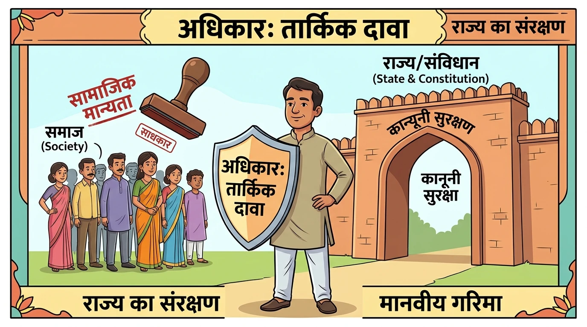
🎨 कार्टून विश्लेषण: अधिकार की संरचना—तार्किक दावा, सामाजिक मान्यता और राज्य का संरक्षण
चित्र का मुख्य संदेश: नागरिक का अधिकार केवल उसकी व्यक्तिगत इच्छा नहीं है। जब नागरिक का 'तार्किक दावा' 'समाज की मान्यता' (स्टैम्प) प्राप्त करता है और 'राज्य व संविधान' उसे कानूनी सुरक्षा का सुरक्षात्मक द्वार (कवच) प्रदान करते हैं, तभी वह वास्तविक अधिकार बनता है!
प्राकृतिक अधिकारों का सिद्धांत (जॉन लॉक का दर्शन)
17वीं और 18वीं शताब्दी में राजनीतिक विचारकों ने यह तर्क दिया कि अधिकार प्रकृति या ईश्वर द्वारा प्रदत्त हैं और कोई भी राजा या सरकार इन्हें छीन नहीं सकती। इसे प्राकृतिक अधिकारों का सिद्धांत (Theory of Natural Rights) कहा जाता है।
जॉन लॉक के 3 प्रमुख प्राकृतिक अधिकार:
- जीवन का अधिकार (Right to Life): प्रत्येक मनुष्य को जीवित रहने और अपनी शारीरिक सुरक्षा का जन्मजात अधिकार है।
- स्वतंत्रता का अधिकार (Right to Liberty): अपनी इच्छा अनुसार सोचने, कार्य करने और निर्णय लेने की स्वायत्तता।
- संपत्ति का अधिकार (Right to Property): अपने श्रम द्वारा अर्जित संपत्ति पर व्यक्तिगत स्वामित्व का अधिकार।
- राज्य की सीमित शक्ति: लॉक के अनुसार, सरकार की स्थापना ही नागरिकों के इन तीन प्राकृतिक अधिकारों की रक्षा के लिए की गई है।
- प्राकृतिक अधिकारों की सीमाएं: समकालीन विचारकों का मानना है कि 'प्राकृतिक' नियम अस्पष्ट हो सकते हैं, इसलिए आज अधिकारों को 'मानवीय गरिमा' और 'मानवाधिकार' के रूप में देखा जाता है।
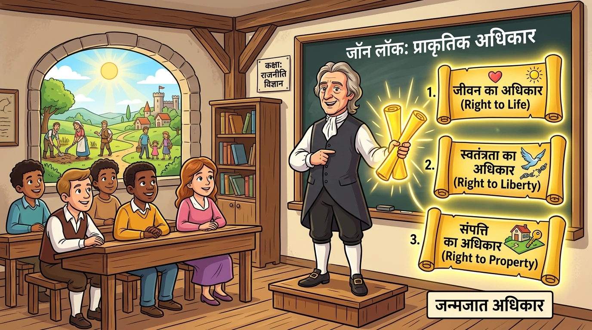
🎨 कार्टून विश्लेषण: जॉन लॉक के तीन स्वर्णिम प्राकृतिक अधिकार
चित्र का मुख्य संदेश: प्रसिद्ध राजनीतिक दार्शनिक जॉन लॉक कक्षा में विद्यार्थियों को समझाते हैं कि जीवन, स्वतंत्रता और संपत्ति—ये तीन अधिकार किसी राजा या सरकार का दान नहीं हैं, बल्कि प्रकृति द्वारा दिए गए जन्मजात मानवीय अधिकार हैं।
सार्वभौमिक मानवाधिकार घोषणा (UDHR 1948)
द्वितीय विश्व युद्ध की विभीषिका और नरसंहार के बाद 10 दिसंबर 1948 को संयुक्त राष्ट्र महासभा ने 'सार्वभौमिक मानवाधिकार घोषणा' (UDHR) को अंगीकृत किया। इसने अधिकारों को वैश्विक और सार्वभौमिक बना दिया।
सार्वभौमिक मानवाधिकार घोषणा के मूल सिद्धांत:
- अनुच्छेद 1 का शाश्वत संदेश: "सभी मनुष्य जन्म से स्वतंत्र और गरिमा तथा अधिकारों में समान हैं।"
- भेदभाव का पूर्ण निषेध: नस्ल, रंग, लिंग, भाषा, धर्म, राष्ट्रीयता या राजनीतिक विचार के आधार पर कोई भेदभाव नहीं किया जा सकता।
- यातना व गुलामी से मुक्ति: दास प्रथा, बंधुआ मजदूरी और अमानवीय शारीरिक दंड पर वैश्विक प्रतिबंध।
- अंतरराष्ट्रीय मानवाधिकार दिवस: प्रतिवर्ष 10 दिसंबर को पूरी दुनिया में मानवाधिकार दिवस के रूप में मनाया जाता है।
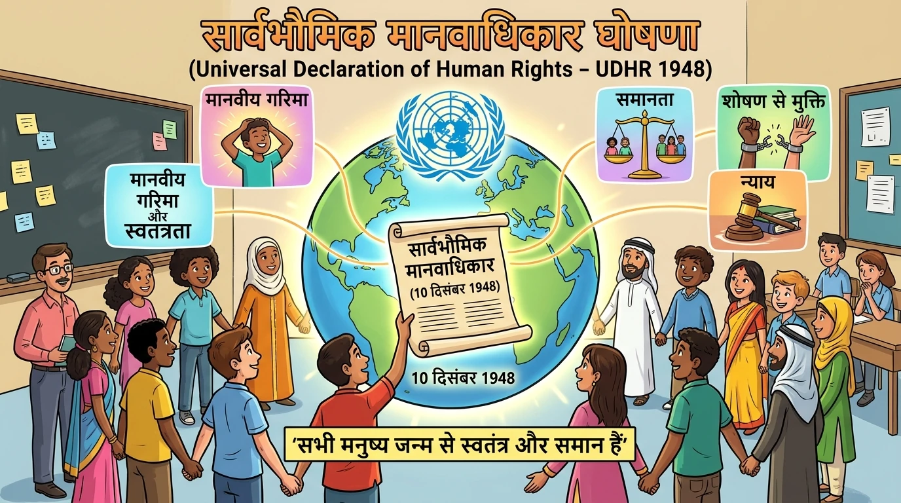
🎨 कार्टून विश्लेषण: सार्वभौमिक मानवाधिकार—मानवीय गरिमा का वैश्विक घोषणापत्र
चित्र का मुख्य संदेश: 10 दिसंबर 1948 को अंगीकृत संयुक्त राष्ट्र का यह घोषणापत्र संपूर्ण मानव जाति को यह विश्वास दिलाता है कि प्रत्येक व्यक्ति, चाहे वह किसी भी देश का हो, जन्म से स्वतंत्र, समान और गरिमापूर्ण जीवन का अधिकारी है।
कानूनी अधिकार, राज्य की सत्ता एवं राष्ट्रीय मानवाधिकार आयोग (NHRC)
अधिकार केवल नैतिक दावे या कागज के शब्द नहीं हैं; वे सीधे राज्य की सत्ता (Authority of the State) से मांगे जाते हैं। कोई भी अधिकार तब तक प्रभावी नहीं हो सकता जब तक राज्य का कानूनी ढांचा उसे संरक्षण और वैधता न दे।
📌 मुख्य सैद्धांतिक आधार: "अधिकार राज्य से यह मांग करते हैं कि वह ऐसे कानून बनाए जो नागरिकों के दावों की रक्षा करें। साथ ही, अधिकार राज्य की शक्ति पर यह सीमा भी लगाते हैं कि राज्य मनमाने ढंग से नागरिकों की स्वतंत्रता में दखल न दे।"
💡 व्यावहारिक उदाहरण (राज्य की सकारात्मक व नकारात्मक भूमिका):
• सकारात्मक मांग: जब हम 'शिक्षा के अधिकार' या 'आजीविका के अधिकार' की मांग करते हैं, तो हम राज्य से कहते हैं कि वह स्कूल बनाए, अस्पताल खोले और रोजगार के साधन उपलब्ध कराए।
• नकारात्मक रोक (सीमा): जब हम 'जीवन और व्यक्तिगत स्वतंत्रता के अधिकार' की बात करते हैं, तो हम राज्य से कहते हैं कि वह पुलिस या सेना के बल पर किसी नागरिक को बिना कानूनी प्रक्रिया के गिरफ्तार न करे।
कानूनी अधिकार और राज्य के मुख्य आयाम:
- कानूनी मान्यता (Legal Recognition): अधिकार केवल तभी व्यावहारिक रूप लेते हैं जब वे देश के संविधान और कानून की संहिताओं में दर्ज हों।
- संवैधानिक सर्वोच्चता (Constitutional Guarantee): सामान्य कानूनों के मुकाबले 'मौलिक अधिकार' (Fundamental Rights) देश के सर्वोच्च कानून द्वारा संरक्षित होते हैं, जिन्हें संसद भी आसानी से नहीं छीन सकती।
- राज्य की सत्ता पर संवैधानिक नियंत्रण: अधिकार राज्य को शक्तिशाली बनाते हुए भी उसकी निरंकुशता पर लगाम लगाते हैं। यह तय किया जाता है कि राज्य क्या कर सकता है और क्या नहीं कर सकता।
- विधि का शासन (Rule of Law): कोई भी प्रधानमंत्री, मंत्री, न्यायाधीश, पुलिस अधिकारी या धनी व्यक्ति कानून से ऊपर नहीं है; कानून के समक्ष सभी समान हैं।
- न्यायिक समीक्षा (Judicial Review): यदि सरकार या संसद ऐसा कोई कानून या आदेश जारी करे जो नागरिकों के बुनियादी अधिकारों का हनन करता हो, तो स्वतंत्र न्यायपालिका उसे तुरंत रद्द कर सकती है।
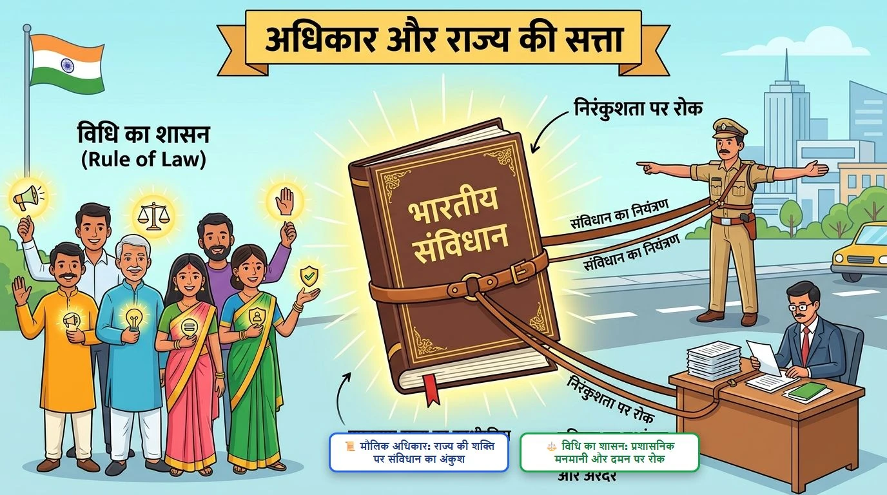
🎨 कार्टून विश्लेषण: कानूनी अधिकार और राज्य—संविधान का संतुलन व नियंत्रण
चित्र का मुख्य संदेश: भारतीय संविधान राज्य की प्रशासनिक शक्ति (पुलिस व अधिकारी) को विधि के शासन के दायरे में बांधकर रखता है, ताकि आम नागरिकों की व्यक्तिगत स्वतंत्रता और गरिमा की पूर्ण सुरक्षा हो सके और राज्य निरंकुश न बने।
राष्ट्रीय मानवाधिकार आयोग (NHRC)—मानवाधिकारों का सजग प्रहरी:
1993 के मानवाधिकार संरक्षण अधिनियम के तहत स्थापित राष्ट्रीय मानवाधिकार आयोग (NHRC) भारत में मानवाधिकारों के उल्लंघन की स्वतंत्र जांच करने वाली सर्वोच्च संस्था है।
- स्वतंत्र जांच की शक्ति: पुलिस हिरासत में हिंसा, जेलों में अमानवीय स्थिति और प्रशासनिक अत्याचार की स्वतः संज्ञान लेकर जांच करना।
- पीड़ितों को मुआवजा व राहत: प्रभावित निर्धन नागरिकों और परिजनों को सरकार से तत्काल आर्थिक सहायता और कानूनी मदद दिलाना।
- मानवाधिकार जागरूकता: विद्यालयों, कार्यस्थलों और समाज में अधिकारों व मानवीय गरिमा के प्रति संवेदनशीलता बढ़ाना।
- सजग प्रहरी (Watchdog): किसी भी संस्था को कानून से ऊपर नहीं होने देना और नागरिकों के अधिकारों की रक्षा करना।
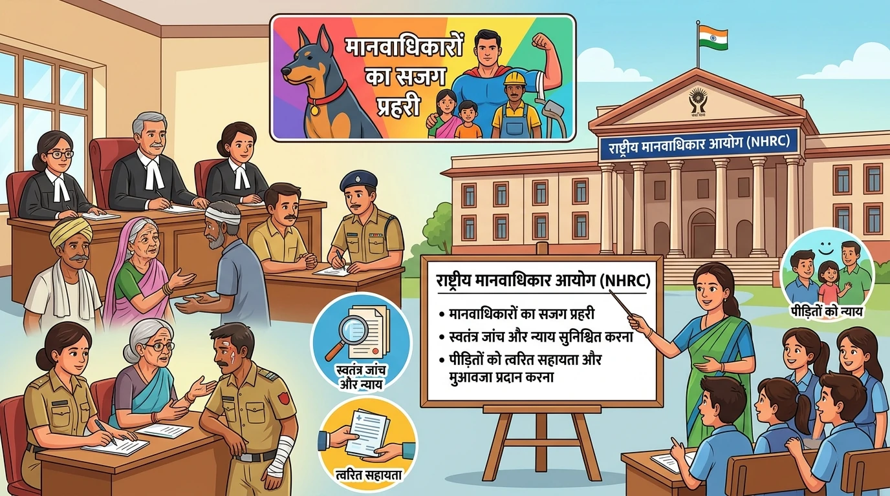
🎨 कार्टून विश्लेषण: राष्ट्रीय मानवाधिकार आयोग (NHRC)—मानवाधिकारों का सजग प्रहरी
चित्र का मुख्य संदेश: NHRC पीड़ित नागरिकों, मजदूरों और बुजुर्गों की शिकायतों की निष्पक्ष जांच करता है और राज्य की एजेंसियों पर निगरानी रखकर यह सुनिश्चित करता है कि किसी भी नागरिक के मौलिक मानवाधिकारों का हनन न हो।
अधिकारों का त्रिविध वर्गीकरण: नागरिक, राजनीतिक और आर्थिक अधिकार
लोकतांत्रिक समाज में एक पूर्ण नागरिक बनने के लिए अधिकारों को तीन बुनियादी श्रेणियों में विभाजित किया गया है:
अधिकारों का त्रिविध वर्गीकरण:
- नागरिक अधिकार (Civil Rights): विचार और अभिव्यक्ति की स्वतंत्रता, कानून के समक्ष समानता, स्वतंत्र आवागमन और बिना डर के सम्मानपूर्वक जीने की स्वतंत्रता।
- राजनीतिक अधिकार (Political Rights): सार्वभौमिक वयस्क मताधिकार, चुनाव लड़ने का अधिकार, राजनीतिक दल बनाने का अधिकार और सरकार की नीतियों की शांतिपूर्ण आलोचना करने का अधिकार।
- आर्थिक अधिकार (Economic Rights): आजीविका का अधिकार, उचित और समय पर पारिश्रमिक, सुरक्षित कार्यस्थल, और न्यूनतम बुनियादी आवश्यकताओं (भोजन, वस्त्र, आवास) की सुरक्षा।
- पारस्परिक निर्भरता: बिना आर्थिक अधिकारों के राजनीतिक अधिकारों का कोई वास्तविक मूल्य नहीं रह जाता; भूखा व्यक्ति वोट की शक्ति का सही उपयोग नहीं कर सकता।
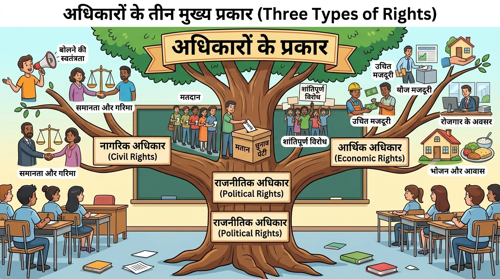
🎨 कार्टून विश्लेषण: अधिकारों का त्रिशाखीय वृक्ष—नागरिक, राजनीतिक और आर्थिक अधिकार
चित्र का मुख्य संदेश: नागरिक अधिकार (भाषण व समानता), राजनीतिक अधिकार (मतपेटी व शांतिपूर्ण विरोध) और आर्थिक अधिकार (उचित मजदूरी, रोजगार व आवास)—तीनों मिलकर ही लोकतंत्र के विशाल वृक्ष को हरा-भरा और नागरिकों को सशक्त बनाते हैं।
समानता का अधिकार एवं स्वतंत्रता का अधिकार (अनुच्छेद 14 से 19)
भारतीय संविधान का पहला मौलिक अधिकार 'समानता का अधिकार' है, जो विशेषाधिकारों और जन्मजात भेदभावों को समाप्त करके न्याय की नींव रखता है। इसके तुरंत बाद अनुच्छेद 19 नागरिकों को छह मौलिक स्वतंत्रताएं प्रदान करता है।
समानता के 5 प्रमुख संवैधानिक स्तंभ (अनुच्छेद 14 से 18):
- अनुच्छेद 14: विधि के समक्ष समता और विधियों का समान संरक्षण।
- अनुच्छेद 15: धर्म, मूलवंश, जाति, लिंग या जन्मस्थान के आधार पर भेदभाव का पूर्ण निषेध।
- अनुच्छेद 16: सार्वजनिक रोजगार व सरकारी सेवाओं में अवसर की समानता।
- अनुच्छेद 17: अस्पृश्यता (छुआछूत) का पूर्ण उन्मूलन और इसे दंडनीय अपराध बनाना।
- अनुच्छेद 18: राजा-महाराजाओं की मध्यकालीन उपाधियों का अंत कर लोकतांत्रिक समानता स्थापित करना।
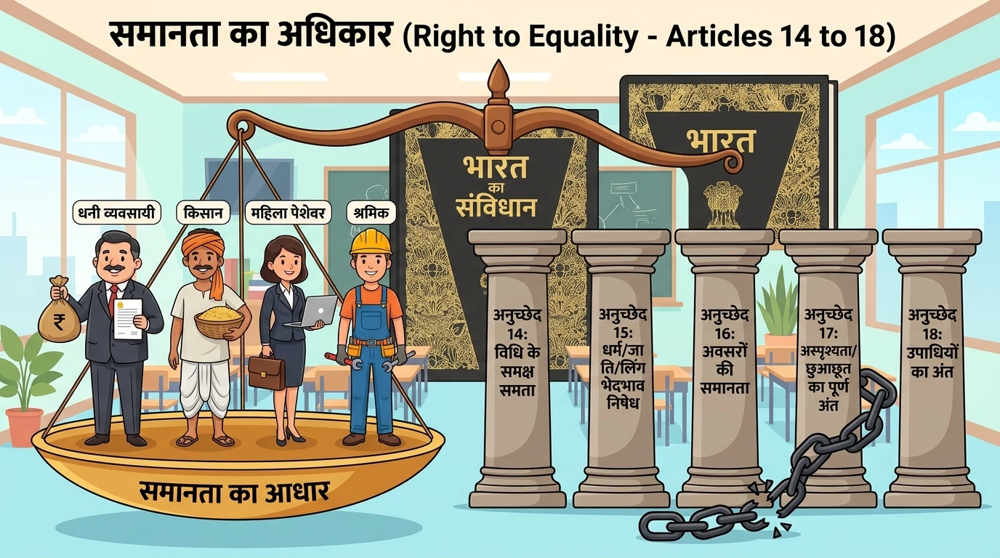
🎨 कार्टून विश्लेषण: समानता का अधिकार—संविधान के 5 स्तंभ और छुआछूत का अंत
चित्र का मुख्य संदेश: धनी व्यवसायी, किसान, कामकाजी महिला और श्रमिक—सभी संविधान के तराजू पर बराबर हैं। अनुच्छेद 17 की टूटी हुई जंजीर अस्पृश्यता के अंत का प्रतीक है और 5 स्तंभ सच्चे समतावादी भारत का आधार हैं।
अनुच्छेद 19 के अंतर्गत प्राप्त 6 मौलिक स्वतंत्रताएं:
- 1. भाषण व अभिव्यक्ति की स्वतंत्रता: अपने विचारों को बोलने, लिखने, चित्रकला व मीडिया द्वारा व्यक्त करने की आजादी।
- 2. शांतिपूर्ण बिना हथियारों के सम्मेलन: अपनी मांगों और विचारों के लिए शांतिपूर्ण सभा व रैलियां करने का अधिकार।
- 3. संघ या संगठन बनाने की स्वतंत्रता: राजनीतिक दल, ट्रेड यूनियन, क्लब या समितियां बनाने का अधिकार।
- 4. भारत में अबाध संचरण: देश के किसी भी राज्य या क्षेत्र में स्वतंत्रतापूर्वक घूमने-फिरने का अधिकार।
- 5. किसी भी भाग में निवास व बसने का अधिकार: भारत के किसी भी हिस्से में घर बनाकर रहने की पूर्ण स्वतंत्रता।
- 6. कोई भी पेशा, व्यापार या कारोबार करने की स्वतंत्रता: अपनी योग्यता व रुचि अनुसार आजीविका चुनने का अधिकार।
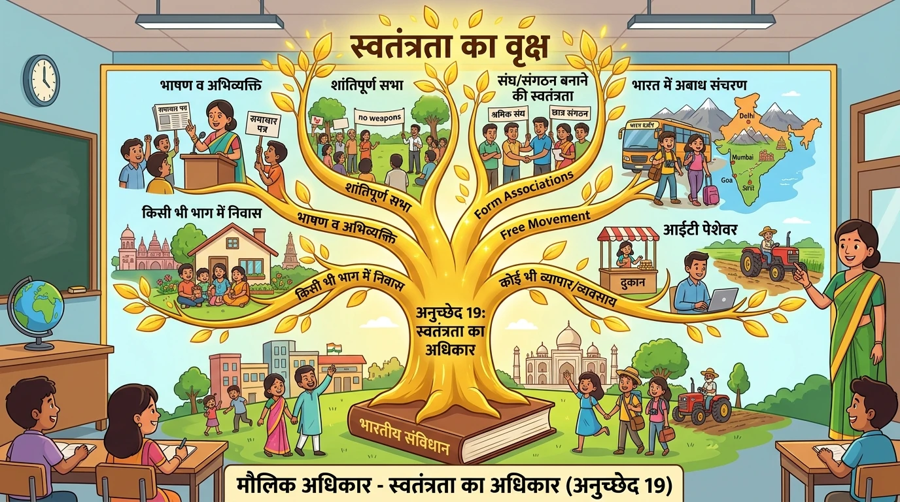
🎨 कार्टून विश्लेषण: स्वतंत्रता का स्वर्णिम वृक्ष—अनुच्छेद 19 की 6 शाखाएं
चित्र का मुख्य संदेश: भारतीय संविधान पर टिका हुआ 'स्वतंत्रता का वृक्ष' अपनी 6 स्वर्णिम शाखाओं (भाषण, सभा, संगठन, संचरण, निवास, व्यवसाय) के माध्यम से देश के हर नागरिक के जीवन में रचनात्मक विकास की ऊर्जा भरता है।
शोषण के विरुद्ध अधिकार एवं धार्मिक स्वतंत्रता का अधिकार (अनुच्छेद 23 से 28)
कमजोर, गरीब और बच्चों को अमानवीय शोषण से बचाने के लिए संविधान का यह अधिकार सबसे कठोर ढाल का कार्य करता है। इसके साथ ही, भारत का धर्मनिरपेक्ष ढांचा हर नागरिक को अपने पंथ के पालन की पूर्ण स्वतंत्रता देता है।
शोषण निषेध के दो मुख्य संवैधानिक प्रावधान (अनुच्छेद 23 व 24):
- अनुच्छेद 23 (मानव तस्करी व बेगार का निषेध): इंसानों की खरीद-फरोख्त (तस्करी), बिना मजदूरी दिए जबरन काम कराना (बेगार) और बंधुआ मजदूरी को कानूनन संगीन अपराध घोषित करना।
- अनुच्छेद 24 (बाल श्रम का पूर्ण निषेध): 14 वर्ष से कम उम्र के बच्चों को कारखानों, खदानों, ईंट-भट्ठों, ढाबों या जोखिम भरे कामों में नियोजित करने पर पूर्ण प्रतिबंध।
- संवैधानिक न्याय: शोषण की बेियों को तोड़कर हर श्रमिक को उचित मजदूरी और हर बच्चे को स्कूल की ओर भेजना ही इस अधिकार का मूल लक्ष्य है।
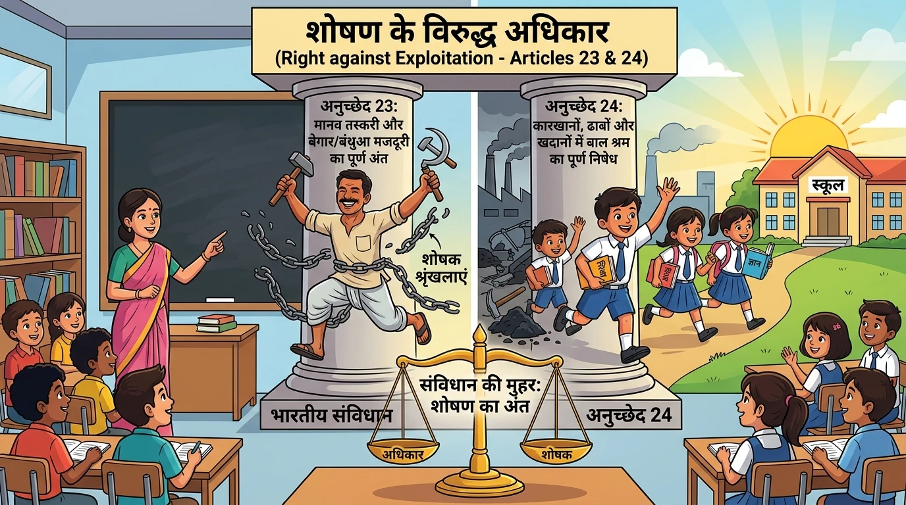
🎨 कार्टून विश्लेषण: शोषण के विरुद्ध अधिकार—बेगार व बाल श्रम से मुक्ति
चित्र का मुख्य संदेश: अनुच्छेद 23 बंधुआ मजदूरी की जंजीरों को तोड़कर श्रमिक को स्वाभिमान देता है और अनुच्छेद 24 बच्चों के हाथों से कारखानों के औजार छीनकर उन्हें बस्ते और स्कूल की राह दिखाता है।
धार्मिक स्वतंत्रता के चार प्रमुख अनुच्छेद (25 से 28):
- अनुच्छेद 25: अंतःकरण की स्वतंत्रता और किसी भी धर्म को अबाध रूप से मानने, आचरण करने व प्रचार करने का अधिकार।
- अनुच्छेद 26: धार्मिक मामलों के प्रबंधन, मंदिर, मस्जिद, गुरुद्वारा, चर्च आदि संस्थाएं स्थापित करने का अधिकार।
- अनुच्छेद 27: किसी विशिष्ट धर्म की अभिवृद्धि के लिए कर देने हेतु किसी नागरिक को बाध्य न किया जाना।
- अनुच्छेद 28: सरकारी शिक्षण संस्थानों में किसी विशिष्ट धार्मिक शिक्षा की बाध्यता का निषेध।
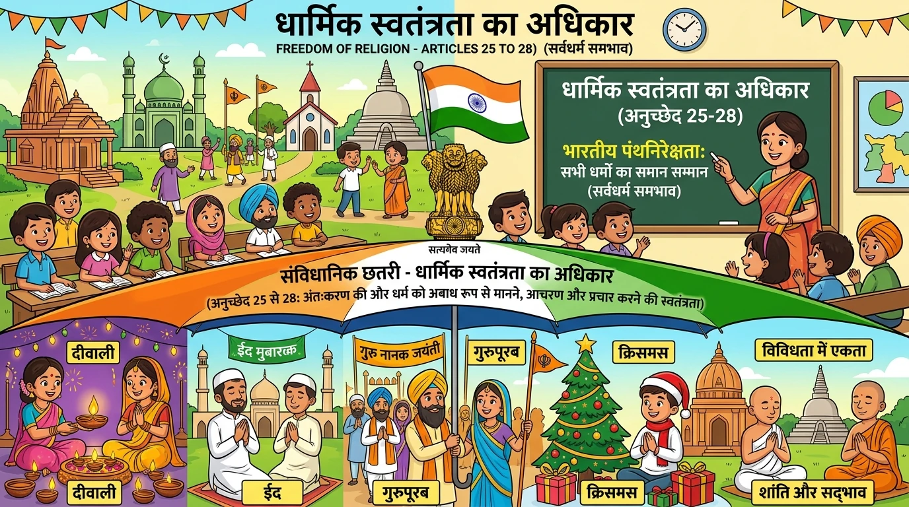
🎨 कार्टून विश्लेषण: धार्मिक स्वतंत्रता का अधिकार—सर्वधर्म समभाव की संवैधानिक छतरी
चित्र का मुख्य संदेश: तिरंगे की संवैधानिक छतरी के नीचे दीवाली, ईद, गुरुपर्व और क्रिसमस मनाने वाले सभी भारतवासी पूर्ण सद्भाव और शांति के साथ अपने धर्म का पालन करते हैं—यही भारतीय पंथनिरपेक्षता की सच्ची सुंदरता है।
सांस्कृतिक व शैक्षिक अधिकार एवं संवैधानिक उपचारों का अधिकार (अनुच्छेद 29 से 32)
भारत की अनुपम शक्ति उसकी सांस्कृतिक, भाषाई और धार्मिक विविधता में है। संविधान के अनुच्छेद 29 और 30 अल्पसंख्यकों की पहचान की सुरक्षा की गारंटी देते हैं, जबकि अनुच्छेद 32 को डॉ. अंबेडकर ने "संविधान का हृदय और आत्मा" कहा था।
अल्पसंख्यकों के सांस्कृतिक व शैक्षिक अधिकार (अनुच्छेद 29 व 30):
- भाषा व लिपि का संरक्षण (अनुच्छेद 29): भारत के किसी भी भाग में रहने वाले नागरिकों को अपनी विशिष्ट भाषा, लिपि और संस्कृति को सुरक्षित रखने का पूर्ण अधिकार है।
- शिक्षण संस्थान स्थापित करने का अधिकार (अनुच्छेद 30): सभी धार्मिक और भाषाई अल्पसंख्यकों को अपनी पसंद के स्कूल, कॉलेज और विश्वविद्यालय स्थापित व संचालित करने का अधिकार है।
- विविधता में एकता (Unity in Diversity): सभी संस्कृतियों, भाषाओं और परंपराओं के सह-अस्तित्व और पारस्परिक सम्मान से ही अखंड भारत की नींव मजबूत होती है।
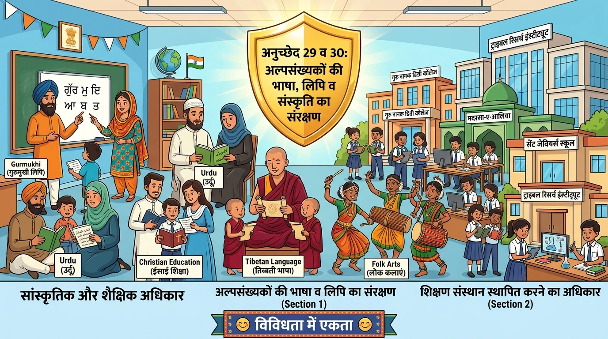
🎨 कार्टून विश्लेषण: सांस्कृतिक और शैक्षिक अधिकार—'विविधता में एकता' का गुलदस्ता
चित्र का मुख्य संदेश: गुरुमुखी, उर्दू, तिब्बती, दक्षिण भारतीय भाषाएं और विभिन्न लोक परंपराएं—संविधान का अनुच्छेद 29 व 30 हर अल्पसंख्यक समुदाय को अपनी अनमोल भाषा, लिपि और शिक्षण संस्थान स्थापित करने की पूर्ण स्वतंत्रता देता है।
संवैधानिक उपचारों का अधिकार (अनुच्छेद 32)—5 प्रमुख रिट ढालें:
- 1. बंदी प्रत्यक्षीकरण (Habeas Corpus): अवैध रूप से हिरासत में लिए गए व्यक्ति को 24 घंटे के भीतर न्यायालय के समक्ष प्रस्तुत करने का आदेश।
- 2. परमादेश (Mandamus): किसी सार्वजनिक अधिकारी को अपने कानूनी कर्तव्य का पालन करने के लिए दिया जाने वाला अदालती आदेश।
- 3. प्रतिषेध (Prohibition): उच्च अदालत द्वारा निचली अदालत को अपने अधिकार क्षेत्र से बाहर कार्य करने से रोकना।
- 4. उत्प्रेषण (Certiorari): निचली अदालत में लंबित मामले को वरिष्ठ अदालत में स्थानांतरित करने का निर्देश।
- 5. अधिकार पृच्छा (Quo-Warranto): किसी व्यक्ति से यह पूछना कि वह किस अधिकार से किसी सार्वजनिक पद पर बैठा है।
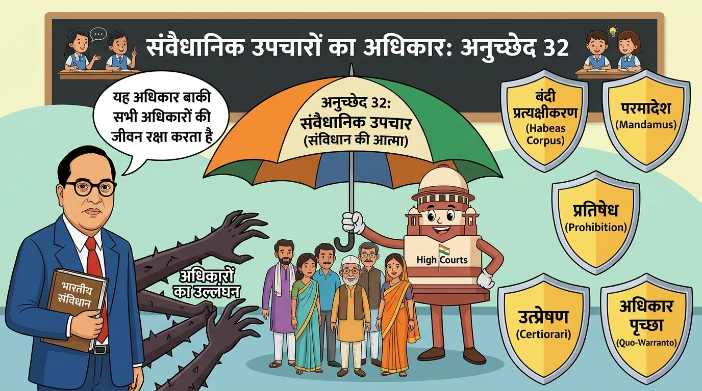
🎨 कार्टून विश्लेषण: अनुच्छेद 32—संविधान की आत्मा और 5 सुरक्षात्मक रिट ढालें
चित्र का मुख्य संदेश: डॉ. अंबेडकर के शब्दों में अनुच्छेद 32 वह सुरक्षात्मक छतरी है जो न्यायपालिका के माध्यम से नागरिकों के अधिकारों पर होने वाले किसी भी हमले को रोकती है। 5 शक्तिशाली रिट (Habeas Corpus आदि) नागरिकों के अधिकारों के अभेद्य सुरक्षा कवच हैं।
अधिकार और जिम्मेदारियां: 4 प्रमुख नागरिक दायित्व
अधिकार केवल व्यक्ति के व्यक्तिगत दावे नहीं हैं; वे समाज और साथी नागरिकों के प्रति अनिवार्य जिम्मेदारियों के साथ आते हैं। अधिकार और कर्तव्य एक ही सिक्के के दो पहलू हैं—एक के बिना दूसरे का कोई अस्तित्व नहीं हो सकता।
📌 मुख्य सैद्धांतिक आधार: "अधिकार केवल राज्य पर ही दायित्व नहीं डालते कि वह क्या करे और क्या न करे, बल्कि वे हम पर भी यह जिम्मेदारी डालते हैं कि हम अपने अधिकारों का प्रयोग इस प्रकार करें जिससे दूसरों के अधिकारों का हनन न हो।"
💡 व्यावहारिक उदाहरण (अधिकारों का टकराव और संतुलन):
• यदि मुझे अपने घर में संगीत सुनने का अधिकार है, तो मुझे लाउडस्पीकर की आवाज इतनी तेज नहीं करनी चाहिए कि पड़ोसी के सोने, आराम करने या पढ़ने के अधिकार में खलल पड़े।
• यदि किसी दुकानदार को सड़क किनारे आजीविका कमाने का अधिकार है, तो उसे पूरी सड़क घेरकर पैदल चलने वाले नागरिकों के आवागमन का अधिकार नहीं छीनना चाहिए।
अधिकारों के साथ जुड़े 4 मुख्य नागरिक दायित्व:
- 1. दूसरों के अधिकारों का सम्मान करना: मेरा यह अधिकार है कि मैं स्वतंत्र रूप से अपने विचार व्यक्त करूँ, तो यह मेरी पहली जिम्मेदारी है कि मैं दूसरों को भी अपने विचार व्यक्त करने दूँ और उनकी असहमति का सम्मान करूँ।
- 2. अधिकारों के प्रयोग में संतुलन व स्व-नियंत्रण: जब दो नागरिकों के अधिकारों में टकराव हो, तो हमें स्वार्थ त्यागकर आपसी समझौते और संयम (Self-Restraint) का मार्ग अपनाना चाहिए।
- 3. सार्वजनिक भलाई और पर्यावरण संरक्षण: शुद्ध जल, ताजी हवा और स्वच्छ पर्यावरण हमारा अधिकार है, इसलिए नदियों को प्रदूषित न करना, पेड़ लगाना और ओजोन परत को बचाना हमारी आने वाली पीढ़ियों के प्रति जिम्मेदारी है।
- 4. राज्य की सत्ता पर सतर्क निगरानी रखना: अधिकार तभी सुरक्षित रह सकते हैं जब नागरिक स्वयं सजग (Vigilant) हों। यदि राज्य सुरक्षा या व्यवस्था के नाम पर हमारे अधिकारों को कुचले, तो नागरिकों को शांतिपूर्ण लोकतांत्रिक तरीकों से विरोध करना चाहिए।
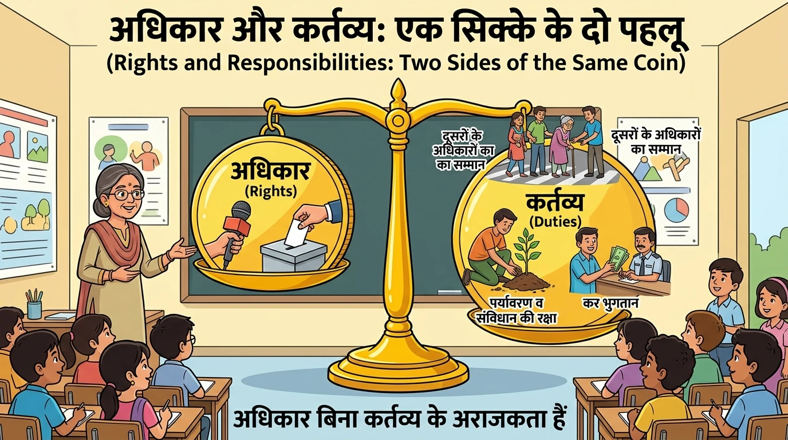
🎨 कार्टून विश्लेषण: अधिकार और कर्तव्य का संतुलन—सिक्के के दो पहलू
चित्र का मुख्य संदेश: तराजू के दोनों पलड़े बराबर हैं—एक तरफ 'अधिकार' (अभिव्यक्ति व मतदान) और दूसरी तरफ 'कर्तव्य' (दूसरों का सम्मान, पर्यावरण रक्षा व कर भुगतान)। अधिकार और कर्तव्य एक-दूसरे के पूरक हैं।
अधिकारों की सीमाएं एवं उचित प्रतिबंध
कोई भी अधिकार निरपेक्ष (Absolute) या असीमित नहीं हो सकता। अधिकारों का प्रयोग समाज की शांति, सुरक्षा और दूसरों के अधिकारों को नुकसान पहुंचाए बिना किया जाना चाहिए।
प्रसिद्ध दार्शनिक सूत्र: "मेरी छतरी घुमाने की स्वतंत्रता वहीं समाप्त हो जाती है जहाँ सामने वाले व्यक्ति की नाक शुरू होती है।"
💡 व्यावहारिक उदाहरण (भाषण की स्वतंत्रता बनाम घृणास्पद भाषण): अभिव्यक्ति की आजादी का अर्थ यह नहीं है कि कोई व्यक्ति समाज में दंगा भड़काने वाला भाषण (Hate Speech) दे या दूसरों पर झूठे लांछन लगाए। कानून व्यवस्था और सामाजिक सद्भाव बनाए रखने के लिए अधिकारों पर 'उचित प्रतिबंध' (Reasonable Restrictions) लगाए जाते हैं।
अधिकारों पर उचित प्रतिबंधों के 4 मुख्य आधार:
- 1. सार्वजनिक शांति और कानून व्यवस्था: समाज में दंगा, हिंसा और अव्यवस्था रोकने के लिए राज्य अधिकारों पर सीमा लगा सकता है।
- 2. देश की संप्रभुता और राष्ट्रीय सुरक्षा: राष्ट्र की अखंडता को खतरे में डालने वाली गतिविधियों को अभिव्यक्ति की स्वतंत्रता नहीं माना जा सकता।
- 3. नैतिकता, शालीनता और सदाचार: समाज में अश्लीलता, बाल शोषण और हिंसा को रोकने के लिए प्रतिबंध आवश्यक हैं।
- 4. न्यायालय की अवमानना व मानहानि से बचाव: किसी निर्दोष व्यक्ति के सम्मान को ठेस पहुंचाना या न्यायपालिका के आदेशों का उल्लंघन करना प्रतिबंधित है।
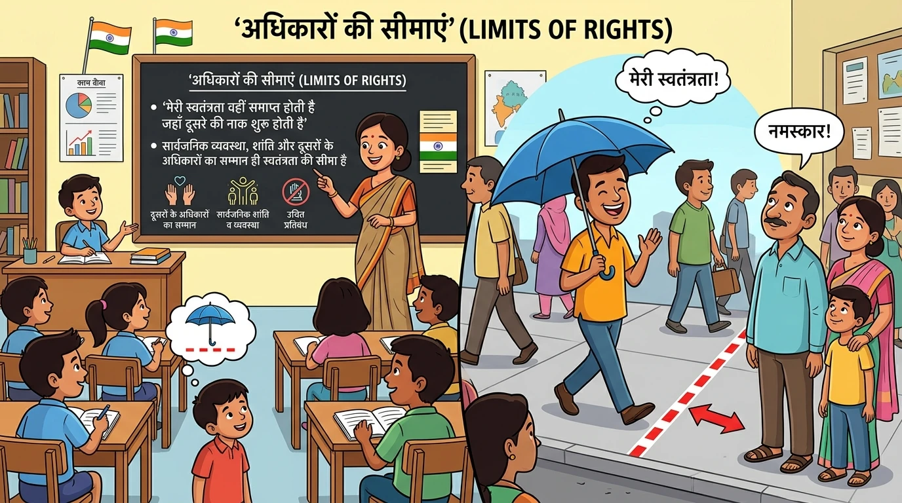
🎨 कार्टून विश्लेषण: अधिकारों की सीमाएं—मेरी स्वतंत्रता और दूसरे का सम्मान
चित्र का मुख्य संदेश: सड़क पर छतरी लेकर चलने वाले नागरिक की स्वतंत्रता वहीं तक है जहाँ से दूसरे नागरिक का निजी दायरा शुरू होता है। सार्वजनिक व्यवस्था और दूसरों के अधिकारों का सम्मान ही सच्ची स्वतंत्रता की सीमा रेखा है।
सूचना का अधिकार (RTI Act 2005) और प्रशासनिक पारदर्शिता
सूचना का अधिकार (RTI) भारत के लोकतांत्रिक इतिहास का एक क्रांतिकारी मील का पत्थर है, जिसने जनता को सरकार के कामकाज पर नजर रखने की ताकत दी।
सूचना के अधिकार के प्रमुख प्रभाव:
- गोपनीयता के ताले को खोलना: सरकारी दफ्तरों की फाइलों, बजट और निर्णयों की जानकारी पाना अब नागरिक का अधिकार है।
- भ्रष्टाचार पर अंकुश: सरकारी योजनाओं, राशन वितरण और निर्माण कार्यों में होने वाले घपलों का खुलासा।
- 30 दिन में उत्तर की बाध्यता: लोक सूचना अधिकारी (PIO) को 30 दिनों के भीतर नागरिक के आवेदन का उत्तर देना अनिवार्य है।
- लोकतंत्र का सशक्तिकरण: जागरूक नागरिक ही एक जवाबदेह और पारदर्शी सरकार की नींव रख सकता है।
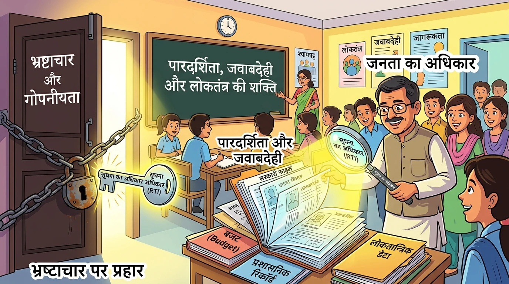
🎨 कार्टून विश्लेषण: सूचना का अधिकार (RTI)—पारदर्शिता का प्रकाश
चित्र का मुख्य संदेश: आम नागरिक जब RTI रूपी टॉर्च और चाबी का उपयोग करता है, तो भ्रष्टाचार और गोपनीयता के बंद दरवाजों के ताले टूटते हैं और सरकारी फाइलों में पारदर्शिता और जवाबदेही का उजाला फैलता है।
निजता का अधिकार (Right to Privacy - पुट्टास्वामी मामला)
2017 के ऐतिहासिक के.एस. पुट्टास्वामी बनाम भारत संघ मामले में सर्वोच्च न्यायालय की 9 जजों की संविधान पीठ ने निजता को अनुच्छेद 21 के तहत मौलिक अधिकार घोषित किया।
डिजिटल युग में निजता के अधिकार का महत्व:
- व्यक्तिगत स्वायत्तता: प्रत्येक व्यक्ति को यह निर्णय लेने का हक है कि उसकी निजी जिंदगी और व्यक्तिगत डेटा में कौन प्रवेश कर सकता है।
- डिजिटल डेटा सुरक्षा: मोबाइल डेटा, बायोमेट्रिक्स, बैंक खाते और निजी संदेशों की सुरक्षा।
- अवैध निगरानी पर रोक: राज्य या निजी कंपनियों द्वारा बिना कानूनी अनुमति के नागरिकों की जासूसी करने पर पूर्ण रोक।
- मानवीय गरिमा का अविभाज्य अंग: बिना निजता के जीवन जीने की वास्तविक स्वतंत्रता संभव नहीं हो सकती।
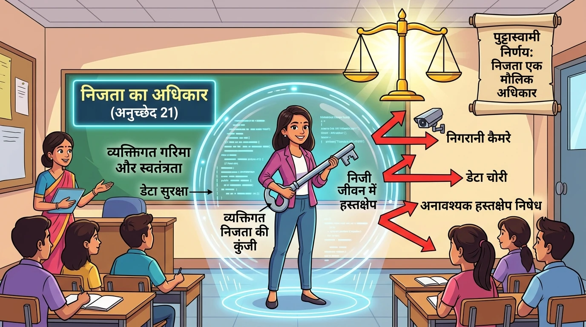
🎨 कार्टून विश्लेषण: निजता का अधिकार—डिजिटल युग में व्यक्तिगत सुरक्षा ढाल
चित्र का मुख्य संदेश: पुट्टास्वामी निर्णय के अनुसार अनुच्छेद 21 का यह सुरक्षा कवच नागरिक को निगरानी कैमरों, डेटा चोरी और निजी जीवन में अनावश्यक हस्तक्षेप से बचाता है।
स्वच्छ पर्यावरण और शिक्षा का अधिकार (अनुच्छेद 21 व 21A)
न्यायपालिका ने अनुच्छेद 21 के 'जीवन के अधिकार' का व्यापक विस्तार करते हुए यह स्थापित किया कि 'जीवन' का अर्थ केवल सांस लेना नहीं, बल्कि प्रदूषण-मुक्त स्वस्थ वातावरण में जीना है। इसके साथ ही, 86वें संविधान संशोधन (2002) द्वारा अनुच्छेद 21A के तहत शिक्षा को मौलिक अधिकार बनाया गया।
पर्यावरणीय अधिकारों के प्रमुख तत्व:
- शुद्ध पेयजल व स्वच्छ वायु का अधिकार: फैक्ट्रियों द्वारा नदियों को प्रदूषित करने और जहरीला धुआं छोड़ने पर सख्त कानूनी रोक।
- हरित ऊर्जा और सतत विकास: सौर ऊर्जा, पवन ऊर्जा और वृक्षारोपण को बढ़ावा देना।
- भविष्य की पीढ़ियों का हक (Inter-generational Equity): आने वाली पीढ़ियों के लिए शुद्ध प्राकृतिक संसाधनों को सुरक्षित रखना हमारा सामूहिक दायित्व है।
- राष्ट्रीय हरित अधिकरण (NGT): पर्यावरण संबंधी विवादों के त्वरित निपटारे के लिए विशेष न्यायिक संस्था की स्थापना।
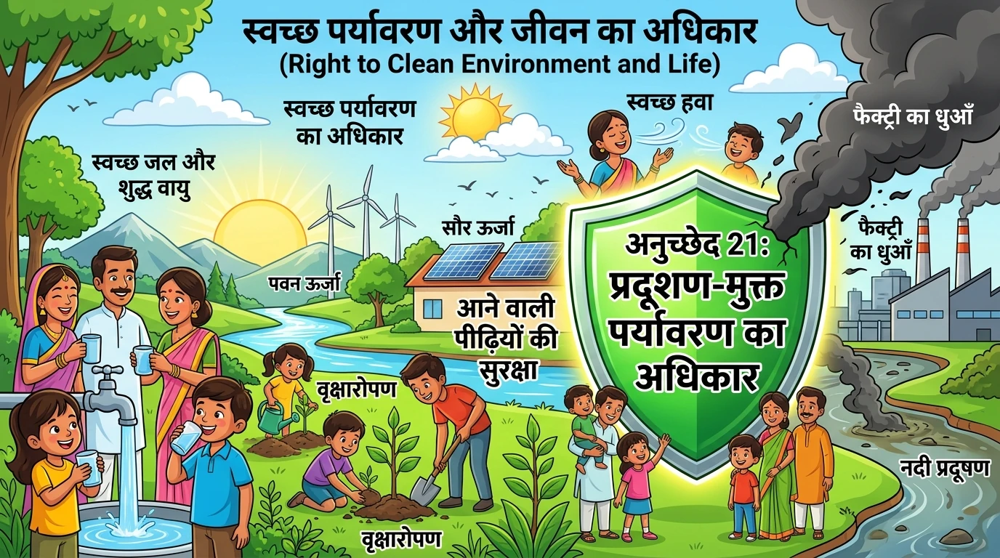
🎨 कार्टून विश्लेषण: स्वच्छ पर्यावरण और जीवन का अधिकार—हरित भविष्य का संकल्प
चित्र का मुख्य संदेश: स्वच्छ नल का जल, शुद्ध हवा, सौर ऊर्जा और वृक्षारोपण—यह सभी नागरिकों और आने वाली पीढ़ियों के जीवन के अधिकार (अनुच्छेद 21) के अभिन्न अंग हैं।
शिक्षा का अधिकार (अनुच्छेद 21A) और बाल संरक्षण:
- 6 से 14 वर्ष के बच्चों को मुफ़्त शिक्षा: प्रत्येक बच्चे को पड़ोस के सरकारी या निजी स्कूल (25% आरक्षण) में निःशुल्क गुणवत्तापूर्ण शिक्षा का अधिकार।
- बाल श्रम का पूर्ण अंत: होटलों, ढाबों, कारखानों और खदानों में बच्चों से काम करवाने पर सख्त कानूनी दंड (अनुच्छेद 24)।
- पोषण और मध्याह्न भोजन (Mid-Day Meal): स्कूलों में गर्म पौष्टिक भोजन देकर कुपोषण को समाप्त करना और उपस्थिति बढ़ाना।
- सशक्त भारत का निर्माण: शिक्षा ही वह माध्यम है जो हर बच्चे को अपने अधिकारों को समझने और राष्ट्र निर्माण में योगदान देने के योग्य बनाती है।
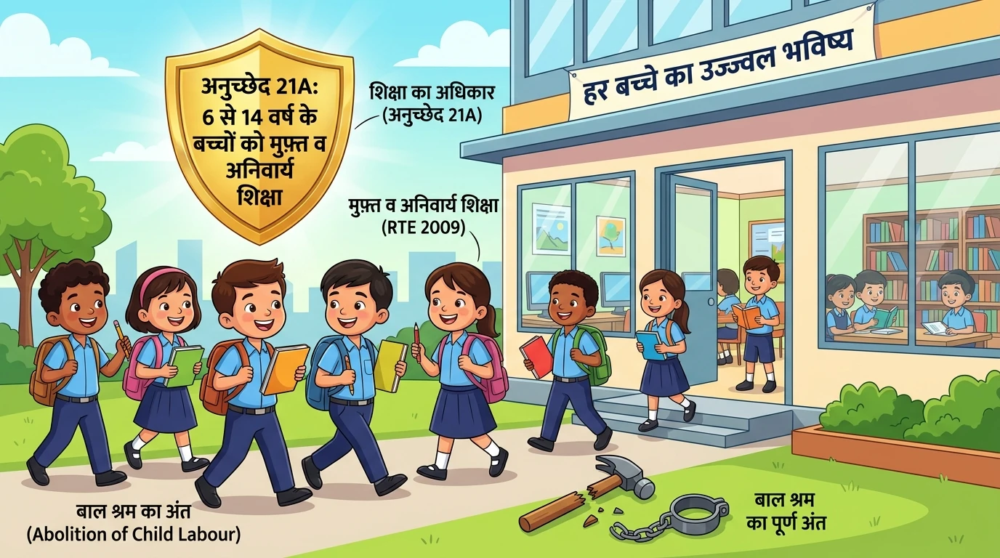
🎨 कार्टून विश्लेषण: शिक्षा का अधिकार (RTE 2009)—हर बच्चे का उज्ज्वल भविष्य
चित्र का मुख्य संदेश: बाल श्रम की बेियों को तोड़कर हर बच्चे के हाथ में किताबें और कलम देना ही सभ्य समाज की पहचान है। अनुच्छेद 21A देश के हर बच्चे को मुफ़्त व अनिवार्य शिक्षा की स्वर्णिम गारंटी देता है!
पशु अधिकार और प्रकृति का संरक्षण
समकालीन राजनीतिक दर्शन में यह महत्वपूर्ण बहस उभरी है कि क्या अधिकार केवल मनुष्यों के होते हैं या प्रकृति और मूक प्राणियों के भी अपने नैतिक अधिकार हैं?
पशु अधिकारों और जैव विविधता के प्रमुख सिद्धांत:
- मूक प्राणियों के प्रति क्रूरता निषेध: पशुओं के साथ अमानवीय व्यवहार, अवैध शिकार और क्रूरता पर कानूनी प्रतिबंध (पशु क्रूरता निवारण अधिनियम 1960)।
- पारिस्थितिकी संतुलन: पृथ्वी के सभी जीव-जंतु और वनस्पतियाँ मिलकर खाद्य श्रृंखला और जीवन को बनाए रखते हैं।
- नैतिक दायित्व: मनुष्य होने के नाते हमारी यह नैतिक जिम्मेदारी है कि हम कमजोर और मूक प्राणियों के जीवन की रक्षा करें।
- नदियों और जंगलों को कानूनी दर्जा: कई देशों और भारतीय अदालतों ने गंगा, यमुना और जंगलों को 'जीवित कानूनी व्यक्ति' का दर्जा दिया है।
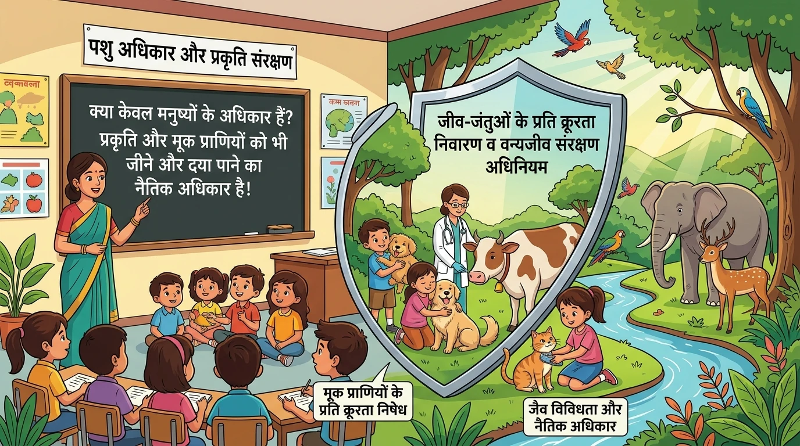
🎨 कार्टून विश्लेषण: पशु अधिकार और प्रकृति संरक्षण—नैतिक संवेदनशीलता
चित्र का मुख्य संदेश: अधिकार केवल मनुष्यों तक सीमित नहीं हैं; प्रकृति, वनों और मूक प्राणियों को भी क्रूरता से मुक्त होकर शांति से जीने और सुरक्षा पाने का नैतिक अधिकार है।
अध्याय निष्कर्ष: अधिकारों का संरक्षण ही लोकतंत्र की आत्मा ("सत्यमेव जयते")
अधिकार केवल कानूनी दस्तावेज नहीं हैं, बल्कि यह उस जीवित लोकतांत्रिक समाज का आधार हैं जहाँ प्रत्येक नागरिक सिर उठाकर गरिमा के साथ जी सकता है।
अध्याय के सर्वोच्च निष्कर्ष बिंदु:
- न्याय, स्वतंत्रता, समता और बंधुता: भारतीय संविधान की प्रस्तावना में निहित ये चार मूल्य ही अधिकारों के प्राणतत्व हैं।
- अधिकारों की सजग रक्षा: अधिकार तभी सुरक्षित रहते हैं जब नागरिक स्वयं जागरूक हों और दूसरों के अधिकारों का उतना ही सम्मान करें जितना अपने अधिकारों का।
- सशक्त और समावेशी भारत: जब अंतिम पायदान पर खड़े व्यक्ति के अधिकारों की रक्षा होती है, तभी राष्ट्र वास्तविक रूप से शक्तिशाली और अखंड बनता है।
- सर्वोच्च संदेश: "सत्यमेव जयते" — सत्य और न्याय की विजय ही अधिकारों की अंतिम सार्थकता है!
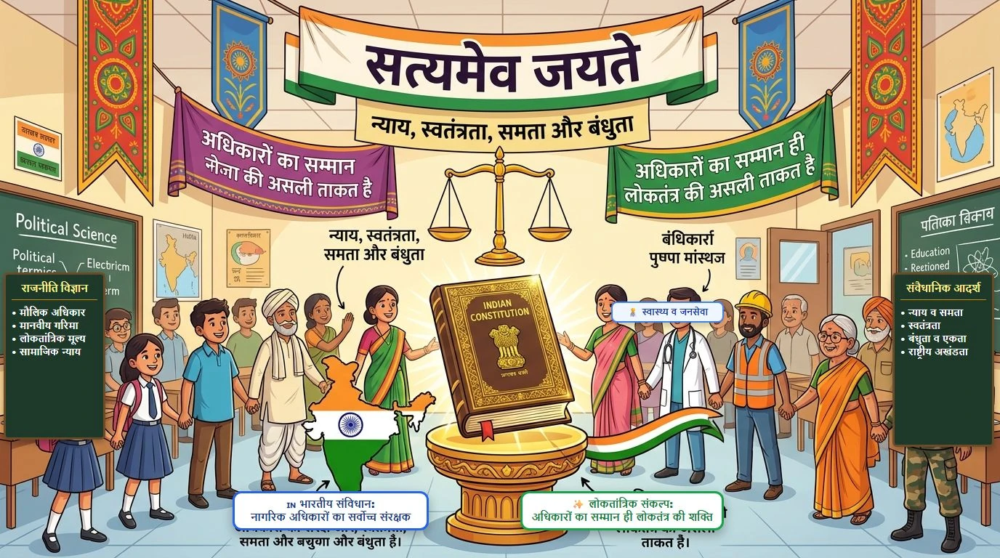
🎨 कार्टून विश्लेषण: अध्याय निष्कर्ष—अधिकारों का सम्मान ही लोकतंत्र की असली ताकत है
चित्र का मुख्य संदेश: भारतीय संविधान और न्याय के तराजू के चारों ओर हाथ में हाथ डालकर खड़े भारत के छात्र, किसान, शिक्षक, डॉक्टर, सैनिक और बुजुर्ग—यह दृश्य बताता है कि अधिकारों का संरक्षण ही लोकतंत्र की आत्मा और 'सत्यमेव जयते' का वास्तविक संकल्प है!